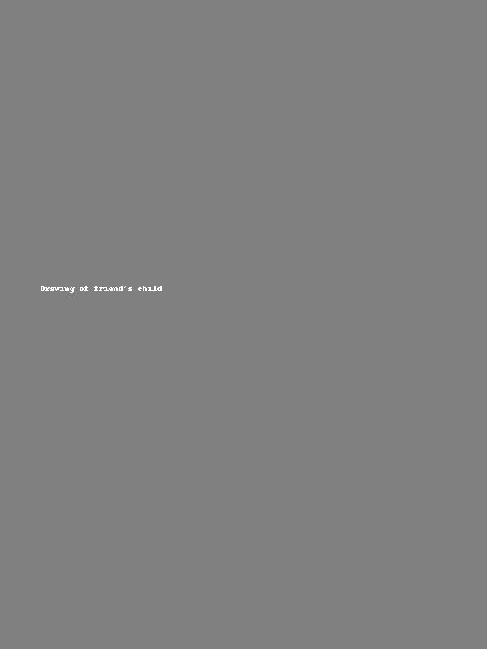

Where Skin Becomes Art
Welcome to Reagan Ink Studio, your next stop for bold, clean, and creative tattoos.
Whether it's your first ink or your latest piece, you're in the right hands.
📍 Based in Bondo, Kenya — Reagan is a self-taught artist turning passion into permanent art.
Book Now on WhatsApp Hey, I'm Reagan — a 21-year-old artist born on July 31st, 2003. My passion for drawing started at a young age, and I've been building my tattoo skills through practice, research, and dedication.
Though I haven’t started tattooing with a machine yet, I'm sharpening my craft every day — from mastering art techniques to studying real tattooing skills online and offline.
I’m a music lover, deep thinker, and fluent English speaker who connects with people easily. I believe great tattoos begin with great listening and understanding — that’s what I bring to every idea shared with me.
Step by step, I'm growing into the tattoo artist I’m meant to be — and this is just the beginning.
Some of my original drawing work. Each piece tells a story.
"Drawing of my friend's child"
Phone: 0746323762 / 0104321982
Email: rochieng3446@gmail.com
Location: Kisumu / Bondo, Kenya